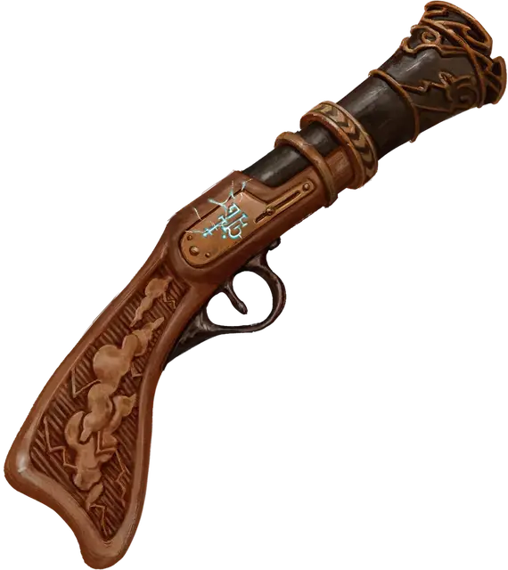

Громобой
Thunderbuss
Оружие (пистоль), очень редкое

Рекомендованная стоимость 5 001-50 000 зм
Это магическое дальнобойное оружие представляет собой расклешенный пистолет с руной «Буря», выгравированной вдоль ствола. Вы получаете бонус +1 к броскам атаки и урона, совершённым с его помощью. Боеприпасов не требует, наносит урон звуком, а не колющий, не имеет свойства «перезарядка».
Пробуждение руны. Бонусным действием вы можете призвать руну оружия, чтобы запустить энергетический шар в точку, которую вы можете видеть в пределах 30 футов от себя. Затем энергия детонирует в сферу бурного ветра и грома радиусом 10 футов с центром в этой точке и каждое существо в этой сфере должно совершить спасбросок Телосложения Сл 14. При провале существо получает 3к6 урона звуком и не может совершать реакции до конца вашего следующего хода. При успешном спасброске существо получает только половину урона.
После того, как руна была пробуждена, она не может быть пробуждена снова до следующего рассвета.